2019 성수부터 2025 사당까지
지난 파티를 보고 올해 파티의 기준을 정합니다
2026 연말파티 TF 첫 모임 · HFK
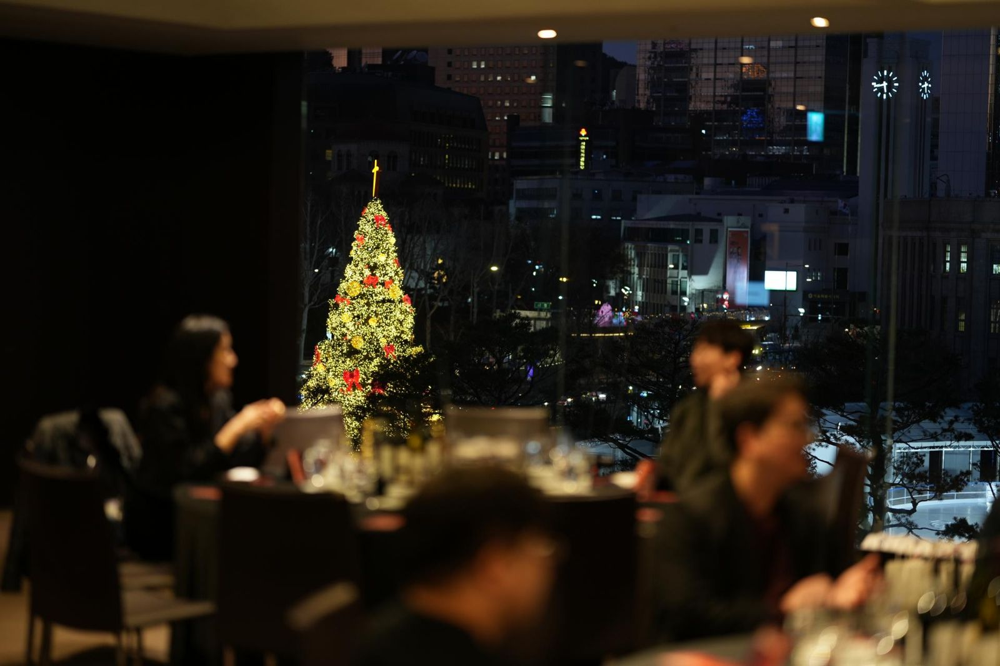
2019~2025년 연말 파티의 일시, 장소, 규모, 티켓비를 표로 정리했습니다
2019년부터 2025년까지 파티마다 무엇을 했는지 봅니다
장소와 규모는 매년 바뀌었지만 빠지지 않은 것이 네 가지 있습니다
지난 파티를 보고 TF와 함께 정할 질문을 추립니다
| 연도 | 이름 · 주제 | 일시 | 장소 | 규모 | 티켓비 |
|---|---|---|---|---|---|
| 2019 | Year-end Party | 12월 21일 (토) 19:00 | 스피닝울프 성수 11층 | 신청 명단 59명 | 6만원 |
| 2020 | On-tact Party | 12월 26일 (토) 22:00 | 줌(Zoom) 온라인 | ❓ 확인 | 5천원 |
| 2021 | 지난 한 해를 잘 되돌아보는 방법 | 12월 ❓ 날짜 | 오아시스 덕수궁 | 20명 | ❓ 확인 |
| 2022 | 한옥 스탠딩파티 | 12월 15일 (목) 2회 | 혜화1938 (한옥 두 채) | 정원 30명 | ❓ 확인 |
| 2023 | Your presence will be our present | 12월 2일 (토) 16:00 | 서울브루어리 성수 5층 | 목표 60명 | 6.5만 · 7만원 |
| 2024 | HFK 10주년 연말 파티 | 12월 15일 (일) 18:00 | 더 플라자 호텔 메이플홀 | 91명 | 14.5만원 |
| 2025 | 올해의 조각들 | 12월 20일 (토) 18:00 | 커먼테이블 (사당) | 선착순 30명 | 12만원 |
2023년 티켓비는 얼리버드 6.5만원, 이후 7만원입니다. 2018년 이전 파티는 드라이브에서 기록을 찾지 못했습니다. ❓ 확인: 2018년 이전 연말 파티
신청서, TF 회의록, 후기, 당일 안내 문자에 적힌 것만 옮겼습니다.
기록이 없는 칸은 비워 두고 표시했습니다.
| 18:30 | 체크인과 입장 기념사진 |
| 19:00 | 테이블별로 인사 나누기 |
| 19:30 | 저녁 식사와 자축의 시간 포토존 · 캘리그라피 이벤트 · HFK 사진전 |
| 20:50 | 2019 리뷰 & 2020 프리뷰 |
| 21:30 | #HFK사람들 어워드와 럭키드로우 |
| 21:50 | 단체 사진 |
19종
럭키드로우(경품 추첨) 상품입니다. 멤버십 시즌권, 포터블 LP 턴테이블, 르라보 향수, LAMY 만년필 등
드레스코드 · White and Red
대상 · 2019년 HFK 전체 멤버(18겨울~19겨울 시즌)
신청 명단 · 기존 멤버 44명, 19겨울 뉴멤버 15명
나에게 보내는 칭찬 메시지를 레터월, 포토월, 영상, 캘리그라피 가운데 원하는 방법으로 남기는 프로그램도 준비했습니다
❓ 확인: 2019년 현장 사진. 사진 앱 19 HFK 앨범에는 파티 날 사진이 없습니다
1부 · 색다른 재미
럭키드로우 번호를 뽑고 밸런스 퀴즈를 풀었습니다. 무작위로 뽑힌 3명에게는 배달 음식을 보냈습니다. 각자 집에서 연주해 합주도 했습니다
2부 · 지식의 향연
멤버 3명과 파트너 1명이 한 해 동안 공부한 주제를 짧게 발표했습니다. 주제는 두려움 없는 조직, 애자일, 포스트 코로나 디커플링, AI for Business였습니다. 이어서 재윤님이 HFK 2020 리뷰와 2021 프리뷰를 나눴습니다
3부 · 감동의 물결
다 같이 건배하고, 멤버들의 2020 리뷰를 듣고, 럭키드로우를 했습니다
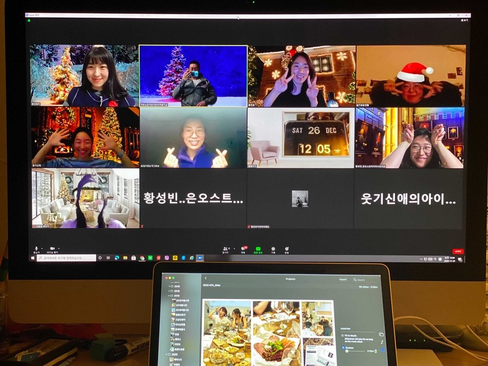
참가비 5천원 · 12월 26일 (토) 22:00~24:00 코로나로 모일 수 없던 해에도 연말 파티는 열었습니다
2021
주제는 '지난 한 해를 잘 되돌아보는 방법'이었습니다. 오아시스 덕수궁에 20명이 모였습니다.
· 써보는경험팀 파트너 민지님의 북토크
· 비전보드 워크숍
· 선물 교환 이벤트
❓ 확인: 12월 며칠인지 · 사진
프로그램은 2022년 신청서에 지난 파티로 소개된 내용입니다
2022 · 혜화1938 한옥 스탠딩파티
| 마당 | 2022년 한 해 동안 쌓인 HFK의 추억 전시 |
| 행랑채 | 차 한잔을 마시며 강점차별화팀 · 팀장의고민팀 파트너에게 고민 털어놓기 |
| 안채 | 웰컴 드링크와 스낵, 내년의 나에게 보내는 응원 방명록 |
| 수돗가 | 럭키드로우, 이어서 포춘쿠키와 스티커 굿즈 |
12월 15일 (목) 17:00, 20:00 두 번 같은 프로그램 · 한옥 정원 30명 · 드레스코드는 블랙과 HFK가 떠오르는 레드 아이템 · 신발을 벗는 곳이라 양말 준비 안내
공간마다 할 일을 하나씩 2022년에는 한옥 마당, 행랑채, 안채, 수돗가에 프로그램을 하나씩 두고 멤버가 돌아다니며 골랐습니다
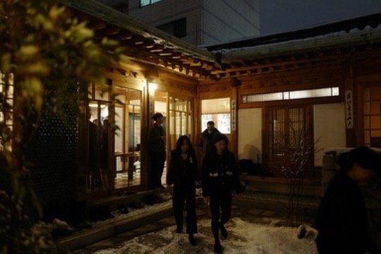
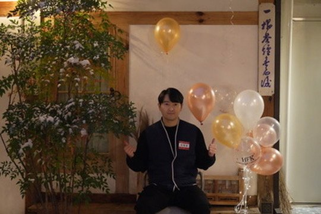
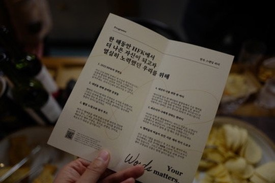
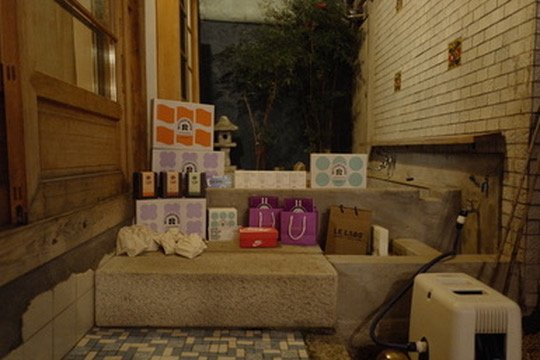
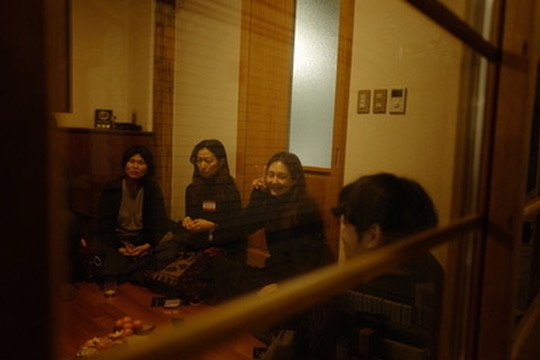
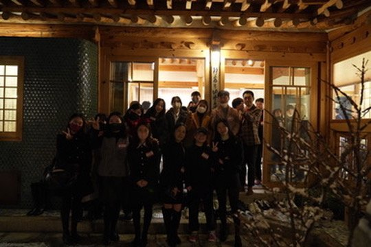
사진 앱 '22 HFK Nov-Jan' 앨범의 12월 15일 사진입니다
장소가 세 번 바뀌었습니다
| 10월 12일 | 삼성 강남 확정. 대관비는 무료지만 케이터링이 안 됨 |
| 10월 19일 | 답사해 보니 사무실 조명에 극장식 좌석이라 대화하기 어려움. 광화문이 보이는 더룸 탁트인 검토 |
| 11월 22일 | 서울브루어리 성수 5층으로 최종 확정 |
TF 문서에는 10월 12일부터 11월 22일까지 회의와 수정안이 다섯 번 적혀 있습니다 · 대상은 23시즌에 한 번이라도 등록한 멤버
선물과 리본 · 입장할 때 리본 색을 뽑고 4명씩 한 테이블에 앉는 계획이었습니다
굿즈 와인잔 · 컵에 HFK에서 인상 깊었던 점을 적으며 입장하는 계획이었습니다
2024 HFK 방향 · You are a Community Leader. 팀 파트너와 클럽 호스트에 도전해 보자고 제안했습니다
뒤풀이 · 살롱드룰렛. 미리 신청한 멤버들이 무작위로 짝을 지어 저녁을 먹습니다
프로그램은 TF 최종 기획안(11월 22일) 기준입니다 · 드레스코드 화이트와 베이지에 레드 포인트 · ❓ 확인: 실제 참석 인원
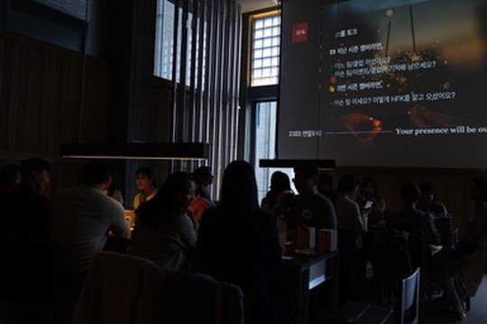
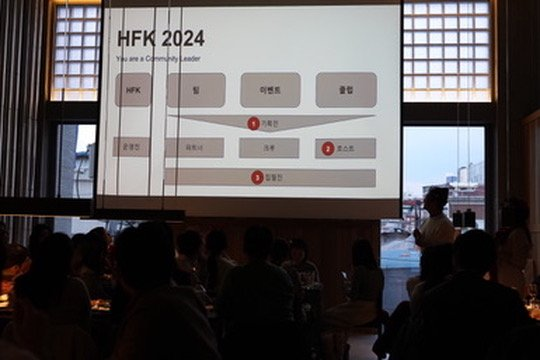
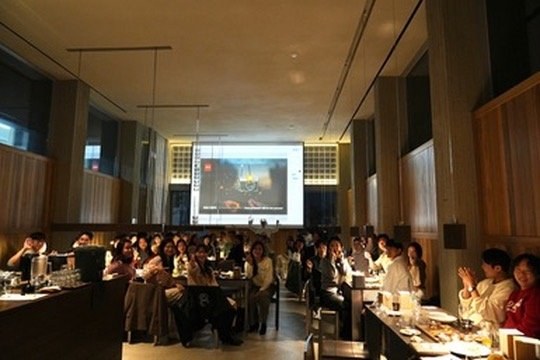
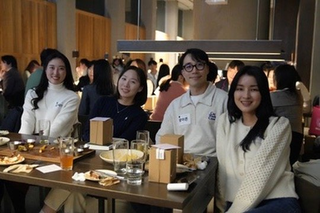
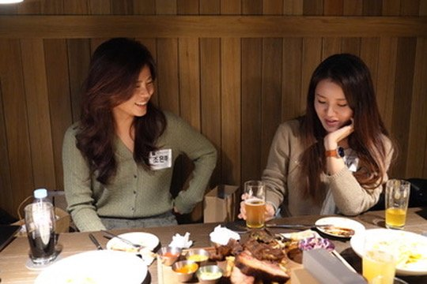
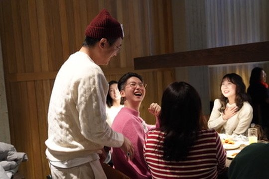
사진 앱 '23 HFK Nov-Jan' 앨범의 12월 2일 사진입니다
91명
얼리버드 기간에 정원 90명이 마감됐습니다
983개
멤버들이 40여 개 품목, 약 2,200만원어치 선물을 협찬했습니다
14.5만원
티켓비와 참석자 모두에게 준 선물 약 10종의 값이 비슷했습니다
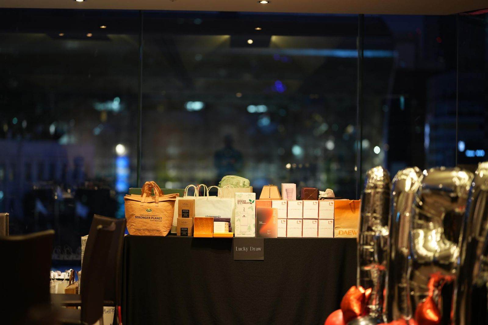
12월 15일 (일) 18:00 · 인터내셔널 뷔페 · 포토부스 · 미니게임 · 2025 HFK 플랜 소개 · 럭키드로우 · 드레스코드 블랙과 레드, 비즈니스 캐주얼
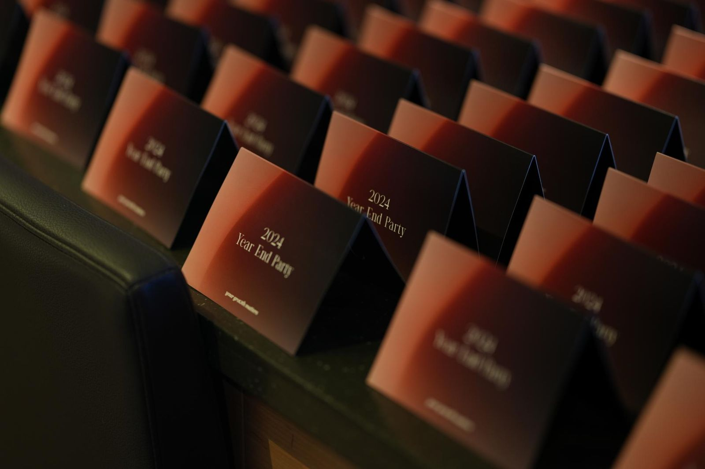
기억하고 싶거나 궁금한 해의 초대장을 골라 앉았습니다. 초대장 안에는 그해 HFK의 인상 깊은 이벤트를 적었습니다
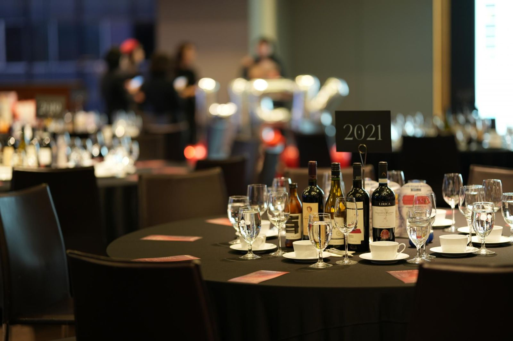
테이블마다 연도 표지를 놓았습니다
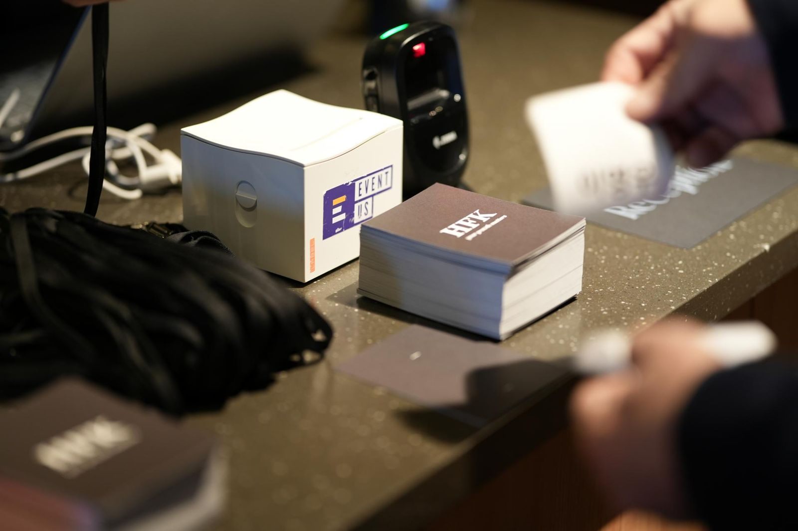
QR을 찍으면 명찰이 바로 나왔습니다. 멤버 영학님이 협찬한 이벤터스 서비스로 출석까지 확인했습니다
멤버가 회사에서 만든 선물 오뚜기 카레는 멤버가 기획했고, 백세주는 멤버가 리브랜딩에 참여한 제품입니다
작게, 대신 알차게
많이 초대하기보다 티켓비가 높더라도 그만큼의 시간을 준비하자는 파티였습니다. 선착순 30명, 12만원
올해의 ⭐️⭐️
테이블마다 올해의 책, 음악, 공간, 루틴, 잊히지 않는 말을 모았습니다. 멤버들은 테이블을 옮겨 다니며 리스트를 채웠습니다
밑줄 익스체인지
밑줄 그으며 읽은 책을 한 권씩 가져왔습니다. 누구에게 추천하는지 카드에 적고, 다른 멤버의 책과 바꿨습니다
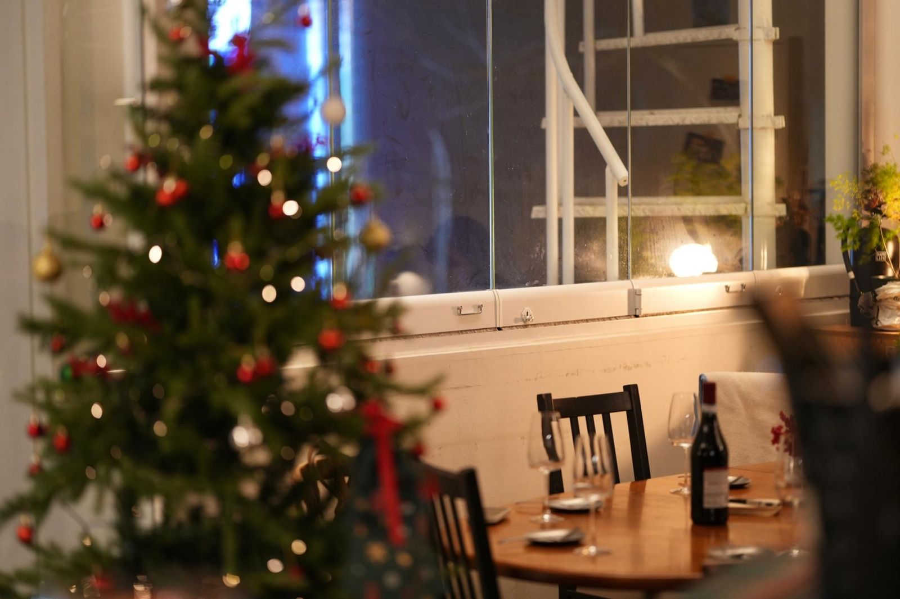
12월 20일 (토) 18:00 · 멤버 주한님과 수연님이 운영하는 곳 · 선물: 오뚜기 산타 머그, 낼나 2026 연력, 하프타임 키링 · ❓ 확인: 실제 참석 인원 · 드레스코드
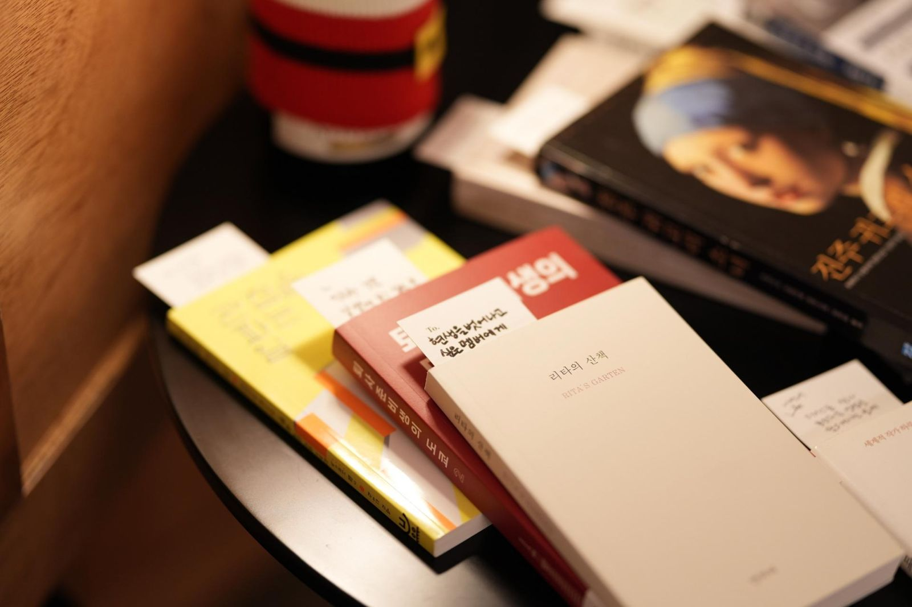
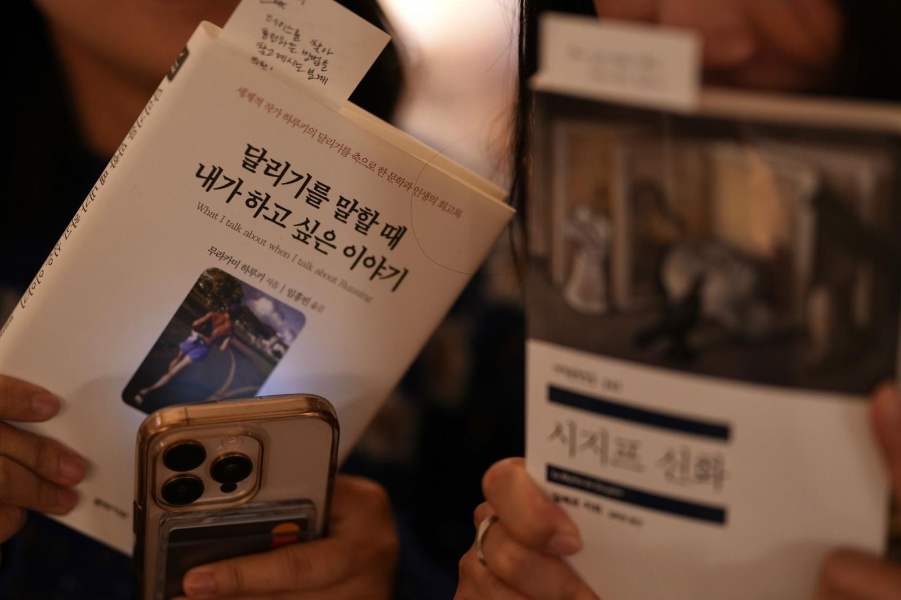
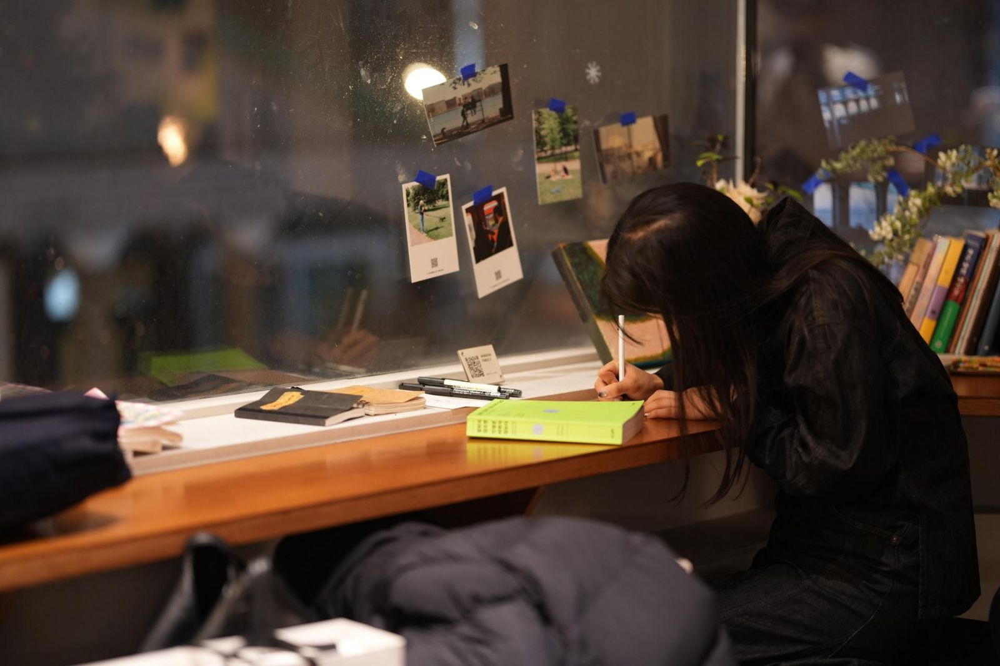
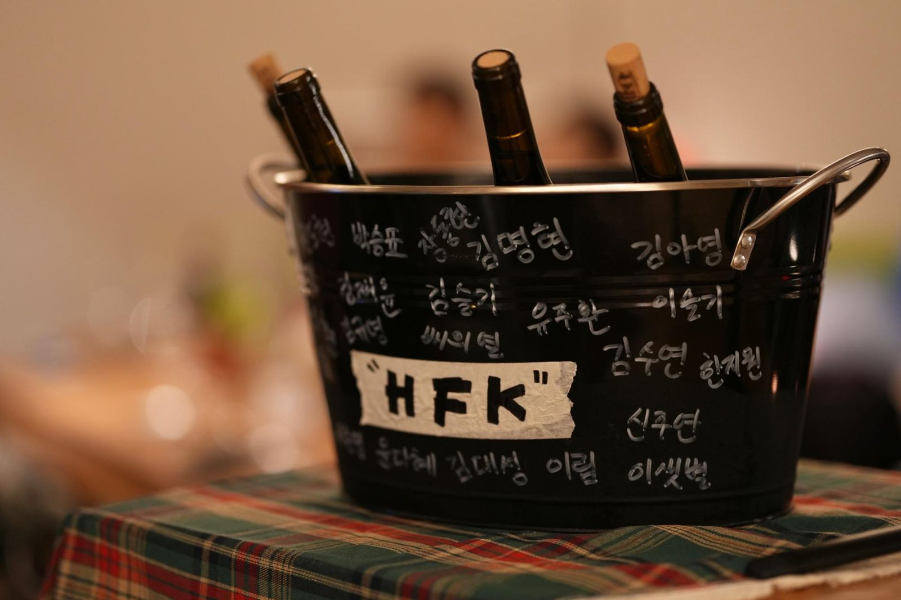
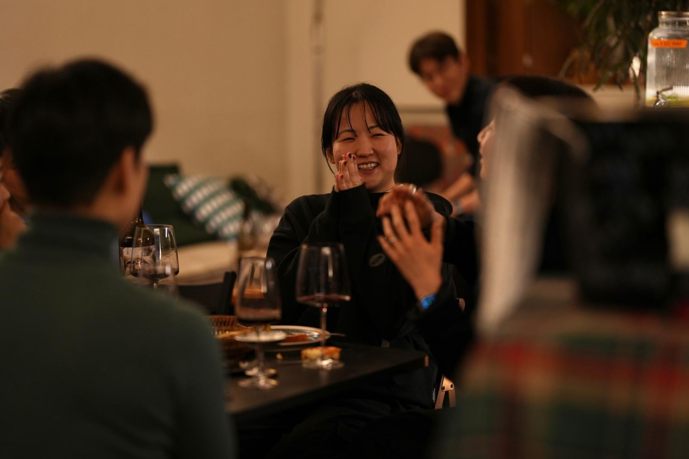
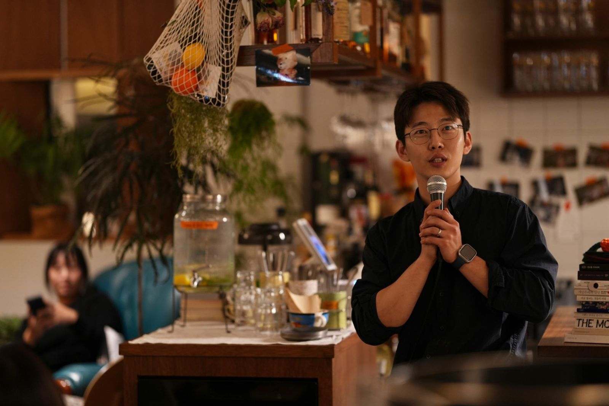
와인 바스켓은 커먼테이블 대표 주한님이 참석자 명단을 받아 깜짝 선물로 준비했습니다 · 2026 HFK 방향: You are a Creator, '내 인프라는 내 자신이다'
성수, 줌, 덕수궁, 혜화, 다시 성수, 시청, 사당. 장소와 규모는 해마다 달랐습니다.
그래도 기록이 남은 파티에는 같은 프로그램이 되풀이됩니다.
2019년 상품 19종에서 2024년 선물 983개까지 늘었습니다. 멤버가 회사에서 만든 제품과 서비스를 나눕니다
2025년에는 참석자 모두에게 선물 3종을 드렸습니다(협찬 2종 · HFK 키링)
2019 · 2020년 다음 해 프리뷰, 2023년 You are a Community Leader, 2025년 You are a Creator
2024년 발표는 2025 HFK 플랜 · ❓ 확인: 슬로건
2019 테이블별 인사, 2022 공간마다 다른 활동, 2023 리본 색, 2024 연도가 적힌 초대장, 2025 올해의 ⭐️⭐️
2019 White and Red, 2022 블랙과 레드 아이템, 2023 화이트와 베이지에 레드 포인트, 2024 블랙과 레드
2020은 온라인, 2021 · 2025는 ❓ 확인
2025년 후기에서 '연말 파티는 대부분 서로 모르시는 분들로 가득 채워집니다. 그리고 매년 파티에서 어색하지 않게 새로운 사람을 알아갈 수 있는 프로그램을 준비합니다.'
연한 막대는 정원이나 목표 인원입니다. 2019년은 신청 명단, 2021년과 2024년은 실제 참석 인원입니다
'반복되는 컨셉의 연말 파티에서 벗어나야 할 필요도 있었다'
2024년 파티를 마치고 쓴 메모입니다. 다음 해에는 반대로 작은 파티를 열었습니다
역사, 재즈, 미술 분야의 짧은 강연을 듣고 네트워킹을 합니다
한 해 동안 AI라는 말에 많이 시달렸으니, 연말 하루만큼은 AI에서 한 발짝 떨어져 지식을 즐기자는 제안입니다
일시와 장소는 함께 정하고 있습니다 · ❓ 확인: 확정 날짜와 장소
세부 프로그램 기획과 현장 지원을 맡습니다. 오프라인 미팅은 2번 정도입니다
2023년에는 리본, 2024년에는 연도 초대장, 2025년에는 올해의 ⭐️⭐️를 썼습니다. 올해는 강연 주제를 테이블 대화로 이을 방법이 필요합니다
2024년처럼 추첨으로 할지, 2025년처럼 모두에게 나눌지 정합니다
강연 사이에 넣을지, 마무리에 둘지 정합니다
2019년부터 기록이 남은 해에는 늘 레드가 있었습니다
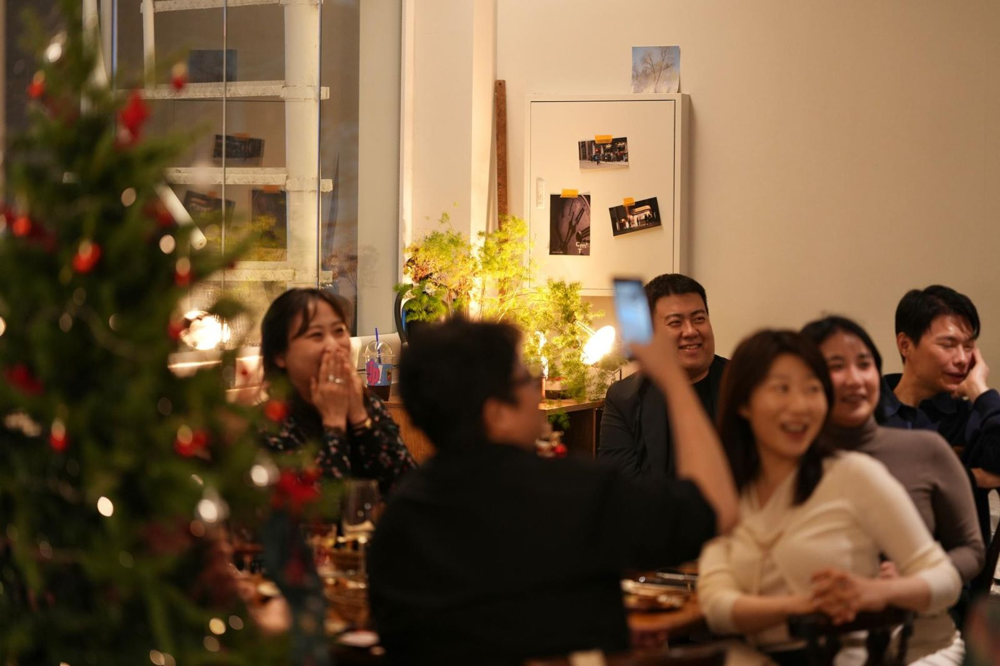
2019 성수 · 2020 줌 · 2021 덕수궁 · 2022 혜화
2023 성수 · 2024 시청 · 2025 사당 · 2026 ?
Your Year-End Matters.
2026 연말파티 TF 첫 모임 · HFK